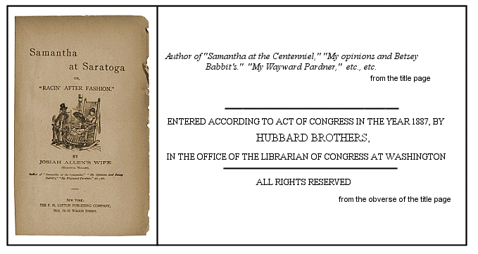

Marietta Holley (1836-1926) has been called America's first female humorist. She was an extremely popular author and a well-known suffragette. Holley, who never married, published her first books as Josiah Allen's Wife, only adding her own name after her success was established. She lived in an 18 room home she built in Jefferson County, New York and drove a Pierce-Arrow. Her legacy of more than 20 books has mostly been forgotten today but they are still very good reading.
I have no information about the illustrator.

Table of Contents